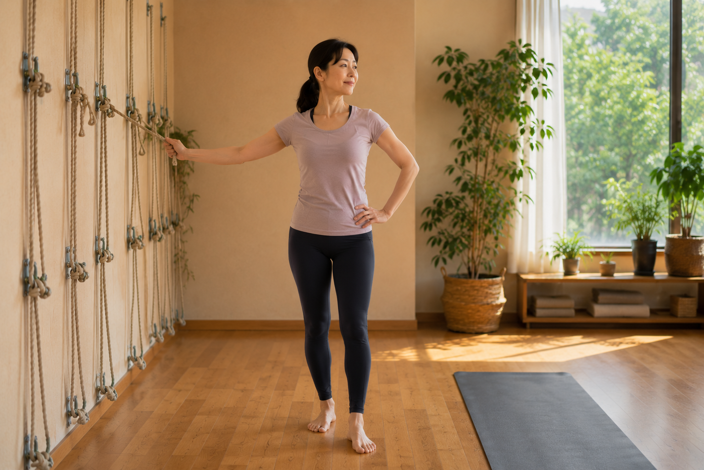

壁繩瑜伽 vs 一般瑜伽：差在哪？我現在比較適合哪一種？

- 這不是誰比誰高級或難度高低的競爭，而是「自體抗重力」與「去重力牽引」兩大物理力學體系的根本差異。
- 一般墊上瑜伽需完全依靠自身肌力抵抗垂直重力，初學者或關節受限者容易在手腕、腰椎與膝蓋產生壓迫代償。
- 壁繩瑜伽利用多點壁掛懸掛分擔自重，將關節垂直壓力轉化為「軸向減壓牽引」，在大腦解除防禦警報下安全開展空間。
- 兩者不是非黑即白，而是動力鏈發展的先後階梯：先透過壁繩重構關節活動度與本體感覺，再回到墊上強化自主控制。
- 若有嚴重未受控高血壓、視網膜剝離、馬尾神經壓迫或重度骨質疏鬆等醫療紅旗，嚴禁冒然運動，應優先就醫。
如果你正站在瑜伽教室門口猶豫不決，心裡反覆盤旋著「壁繩瑜伽跟一般墊上瑜伽到底差在哪？我筋骨這麼硬真的能練嗎？我現在到底適合哪一種？」，請先放下對難度與柔軟度的焦慮。兩者最根本的差別，不在於姿勢擺得多漂亮，而在於「重力如何施加在你的骨骼關節上」，以及「你的大腦在動作中感受到的安全感」。
先講結論：不是難度之爭，而是「自體抗重力」與「物理減壓牽引」的力學維度差異
許多人誤以為壁繩瑜伽是「進階高難度特技」，或者以為它只是「給完全動不了的人用的復健繩」。在運動生物力學的視角下，這兩種觀點都失之偏頗：
- 一般墊上瑜伽（Mat Yoga）：本質是「全自體抗重力承重（Axial Compression）」。身體在水平地面上移動，無論是下犬式、平板式還是弓箭步，你的四肢必須承擔全身 100% 的重量。當你的深層核心無力或胸椎卡死時，地心引力就會無情地壓在你的手腕、腰椎小面關節或膝關節上，引發代償性聳肩與下背疼痛。
- 壁繩瑜伽（Wall Rope Yoga / Yoga Kurunta）：本質是「物理自重減壓牽引（Axial Traction & Decompression）」。源自艾揚格瑜伽大師 B.K.S. Iyengar 的智慧，利用牆面鋼構固定點與高承重繩帶，將骨盆或胸腔安全懸掛。繩索分擔了 30% 至 70% 的身體自重，將原本向下擠壓脊椎的垂直重力，逆轉為溫和延展脊柱的牽引拉力，讓椎間盤與關節腔在完全無痛的條件下重新獲得呼吸空間。
解剖生物力學深度對決：四大核心力學機制
深入人體運動學結構，壁繩與墊上練習在肌肉、關節與神經受器層面展現出截然不同的作用機制：
1. 脊椎受力：垂直軸向擠壓 vs 自重深層牽引
在墊上做站姿前彎或後彎時，地心引力持續對椎間盤施加垂直軸向壓力。若是核心無力或骨盆旋轉受限，腰椎 L4–S1 往往成為折疊的代罪羔羊；壁繩懸掛則透過繩帶環抱骨盆髂骨嵴，利用下半身自然下垂的重力，形成溫和的自然牽引（Gravity Traction），物理性增加椎間孔（Intervertebral Foramen）與小面關節間隙，特別有助於緩解久坐累積的腰椎剪切力。
2. 動作控制模式：開放鏈代償失穩 vs 閉鎖鏈骨骼對位
在地面動作中，新手常處於本體感覺迷失狀態，不知道自己的骨盆有沒有歪、肋骨有沒有外翻，為了「做成某個外形」而啟動表層大肌肉盲目死撐；壁繩與牆壁共同構成了堅固的剛性參考系（Closed Kinetic Chain），給予大腦明確的空間力線反饋，強迫身體回到對稱的中立排列，大幅杜絕「歪著身體硬練」的力學傷害。
3. 神經反射調控：肌梭防禦痙攣 vs 本體感覺神經卸載
當筋骨僵硬的人在墊上硬拉時，大腦因恐懼摔倒或關節脫位，會命令肌肉內的「肌梭（Muscle Spindle）」啟動強烈牽張反射，肌肉越拉越緊繃；壁繩提供了極佳的「抓握與承托安全感」，中樞神經系統感知到跌倒風險降為零，副交感神經得以主導，防禦性痙攣自動解除，讓平時僵硬緊閉的胸小肌、闊背肌與髖屈肌得以深層釋放。
4. 肌力訓練取向：自主多平面抗重力 vs 孤立喚醒深層姿勢肌
墊上瑜伽需要學員在三維空間中自主維持全身動力鏈的張力平衡，極度考驗本體感覺與自主核心協調；壁繩瑜伽則能暫時卸除平衡負擔，精準孤立活化沉睡的深層抗重力肌群（如前鋸肌、菱形肌、下斜方肌、臀中肌），為日後的自主動作打下堅實的神經控制基礎。

完整維度綜合對比表
| 比較項目 | 壁繩瑜伽（Wall Rope Yoga） | 一般墊上瑜伽（Mat Yoga） |
|---|---|---|
| 主要力學特徵 | 物理懸掛、去重力軸向牽引、關節間隙開展 | 自體抗重力承重、關節軸向受力、多平面支撐 |
| 關節負擔 | 極低。繩索承托體重，消除手腕、膝蓋與腰椎擠壓 | 較高。完全自力支撐，姿勢不良容易壓迫末端關節 |
| 大腦神經狀態 | 外在支點給予安全感，解除肌梭防禦性強直痙攣 | 需持續監控平衡防跌倒，本體感覺弱者易緊繃焦慮 |
| 柔軟度門檻 | 極低。多段繩扣微調，身體極度僵硬也能精準對位 | 較高。若手碰不到地或關節角度受限，容易代償折腰 |
| 核心訓練重點 | 深層姿勢穩定肌（前鋸肌、多裂肌、臀中肌）精準募集 | 全身動態抗重力整合、核心動力鏈流動傳遞 |
| 動作流動節奏 | 偏向定點解剖校準、深度呼吸浸潤與結構重塑 | 偏向動態串聯、連續動作流動（Flow）與自主平衡 |

什麼樣的身體狀況，現在優先適合壁繩瑜伽？
如果你檢視目前的日常生活與身體感受，符合以下幾項特徵，壁繩瑜伽會是你最溫柔也最有效的起步選擇：
- 長期久坐、胸椎整片卡死：坐辦公室超過 8 小時，上背拱起如龜殼，在平地做開胸動作只會折腰脖子痠痛。
- 手腕、手肘或膝蓋曾受傷或退化：在地板做下犬式或四足跪姿時，手腕撐地就劇烈刺痛，無法承受自身重量。
- 自認「全身硬邦邦」不敢進瑜伽教室：前彎手碰不到膝蓋、盤腿坐骨盆直立不起來，害怕在團體班跟不上節奏硬撐受傷。
- 腰椎經常緊繃發酸、需要減壓空間：久站久坐感覺後腰被垂直壓扁，渴望像牽引機一樣有力量幫脊椎拉出間隙。
- 缺乏本體感覺、搞不清楚自己骨盆在哪：閉上眼睛就不知道身體有沒有歪，需要明確的物理支點給予大腦回饋。
什麼樣的身體狀況，一般墊上瑜伽更能發揮優勢？
墊上瑜伽絕非被淘汰的練習，對於以下狀況，墊上練習能提供無可取代的價值：
- 關節無急性疼痛、脊椎具備良好基本活動度：各大關節活動自如，沒有神經壓迫或急性發炎困擾。
- 渴望動態流暢感與心肺呼吸節奏的結合：喜愛拜日式連續串聯、流動瑜伽（Vinyasa）的節奏感與汗水淋漓的專注狀態。
- 希望深化自主本體平衡與神經肌力抗重力訓練：想挑戰單腳站立平衡、手倒立或自主核心支撐，強化神經控制。
- 想隨時隨地練習：不受限於牆面設備，一張瑜伽墊或甚至一塊草地就能展開個人練習。
身體很硬、沒基礎？為什麼壁繩的「無痛安全窗格」能打破惡性循環
許多新手常說：「等我筋骨練軟一點再來練瑜伽。」這在生物力學上是完全相反的因果關係。身體之所以僵硬，往往是大腦因為「關節不穩、核心無力」而下達的保護性指令。如果一開始就去一般墊上練習，在手碰不到地、重心搖晃的情況下，大腦只會命令淺層肌肉咬得更緊，結果練完脖子更酸、腰更痛。
壁繩的價值就在於「無痛安全窗格（Pain-Free Safety Margin）」。繩帶替你穩住骨盆、分擔重量，你不需要「死撐」，大腦便願意授權放鬆表層代償肌群，讓原本卡死的關節在零負擔下恢復滑動。當你在壁繩上建立了清晰的神經肌肉控制路徑，日後再遷移回到一般墊上瑜伽或日常生活，你的身體自然學會了省力與中立。
臨床急症紅旗（Red Flags）：哪些情況不能直接練習？
瑜伽是體態教育與神經再學習，絕非醫療行為。無論壁繩或墊上練習，若出現以下急性醫療紅旗警訊，必須立即停止運動並尋求各專科醫師診治：
- 壁繩倒懸禁忌症：嚴重未受控之高血壓、心臟病、腦血管動脈瘤、青光眼、視網膜剝離或嚴重中耳炎患者，嚴禁進行逆重力倒懸動作，以免顱內壓與眼壓急遽飆升。
- 神經根急症：單側肢體突發電擊般劇烈放射痛、肌肉迅速無力萎縮、手指或腳趾持續麻木失去知覺（頸椎或腰椎神經根急性嚴重壓迫）。
- 馬尾症候群（Cauda Equina Syndrome）：會陰與骨盆底鞍區感覺麻木、排尿排便失禁或困難，此為神經外科急症，必須 24 小時內緊急就醫手術減壓。
- 重度骨質疏鬆：骨質密度檢測 T-score < -3.0 或曾發生壓迫性骨折病史者，嚴禁劇烈折疊與懸掛扭轉，以防骨骼斷裂。
不確定自己到底卡在哪裡？先從科學體態評估開始
無論選擇哪一種練習方式，最重要的第一步是看懂自己的骨骼排列與代償機制。鑫彥瑜珈提供首次體驗專案，透過專利 AI 2D 體態幾何分析儀拍攝，結合專業老師 20 分鐘當面逐行解讀，幫你找出骨盆、胸椎與肩胛的失衡盲點，量身建議最安全的運動起點。
預約首次 NT$299 AI 體態檢測（原價 NT$699）本文為運動生物力學與體態調整衛教知識分享，非醫療診斷或治療處方。若有慢性病史、關節退化或骨科舊傷，請先諮詢合格醫療專業人員。
常見問題
壁繩瑜伽和一般墊上瑜伽最大的力學差別是什麼？
最核心的差異在於「重力對關節的作用方式」。一般墊上瑜伽屬於完全自體抗重力訓練，學員必須依靠自力支撐全身重量，若核心或周邊肌力不足，垂直軸向重力容易直接壓迫在手腕、腰椎小面關節或膝蓋引發代償；壁繩瑜伽則利用多點高承重繩帶提供自重物理懸掛，將原本壓迫脊椎的重力轉化為軸向牽引拉伸力，使椎間盤與關節腔內部壓力驟降，能在完全無痛且不給關節額外負擔的前提下安全伸展。
身體很硬、完全沒有瑜伽基礎，先練壁繩會不會太危險？
不會，事實上身體越僵硬、越沒有基礎的人，反而更適合從壁繩瑜伽切入。在一般地板上，僵硬的學員常因「碰不到地」或「害怕跌倒」而激發大腦的防禦性緊繃，導致聳肩、憋氣或折腰代償；壁繩提供了穩定的外部骨骼支點與多段高度調整，能分擔 30% 到 70% 的自重，讓大腦感覺安全，肌梭不再反射性強直收縮，能精準在無痛活動度內喚醒深層穩定肌群。
壁繩瑜伽包含倒立或倒懸動作嗎？初學者一定要做嗎？
壁繩系統確實具備極具特色的「骨盆自重倒懸」功能，能在完全不壓迫頸椎與手腕的狀態下達成腰椎深層減壓；但倒懸絕對不是新手的強制項目。在專業一對一或小班課程中，老師會先依個人體態評估、柔軟度與心血管狀況循序漸進，初期主要專注於站姿開肩、胸椎伸展與骨盆中立位建立，絕不強迫學員進行未經準備的倒懸。
什麼樣的人現在更適合選擇一般墊上瑜伽？
如果你的脊椎與各大關節目前沒有急慢性壓迫、滑脫或神經麻痛，具備基本的肢體本體感覺與核心控制力，且偏好呼吸與動作連續流暢結合的動態節奏（例如流動瑜伽或哈達瑜伽），一般墊上瑜伽是非常理想的全身自主肌力抗重力訓練；許多資深練習者也會將壁繩作為「校準體態與解開深層盲點」的輔具，兩者相輔相成。
有椎間盤突出或關節退化的人，適合練習壁繩瑜伽嗎？
在非急性發炎期且經專科醫師評估許可的情況下，壁繩瑜伽常是腰椎減壓與退化關節活動的友善選擇，因為懸掛能拉開脊椎小面關節與椎間孔間隙；但若處於急性發炎劇痛期、單側下肢出現神經根壓迫之劇烈電擊麻痛、或伴隨大小便功能障礙（馬尾症候群紅旗），嚴禁進行任何運動，必須立即尋求骨科或神經外科醫療處置。